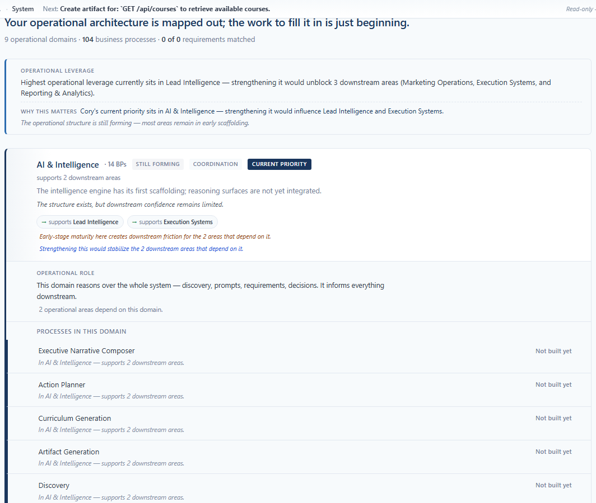
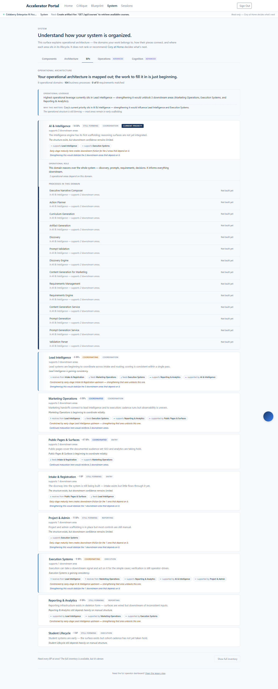

Shipped 2026-05-16 to enterprise.colaberry.ai
(commits e3e763d). Two bounded additions on top of an
already-mature topology surface: a calm canonical-pathway stage chip
on each domain row, and the priority/downstream dependency accent
now extending through BP rows. Plus an anti-overwhelm audit pass —
three findings logged for the operator, no rushed fixes shipped.
Status of every item in the prompt against current production:
| Item | Status | Where |
|---|---|---|
| Replace horizontal flow strip | DONE 2026-05-15 | Removed in Operational Priority Topology Sprint |
| Embed Cory priority into topology | DONE 2026-05-15 | "Current priority" badge + 3px primary border |
| Dynamic domain priority ordering | DONE 2026-05-15 | sortByOperationalPriority() |
| "Why this matters now" | DONE 2026-05-15 | Calm sentence in leverage block |
| Meaningful process context | DONE 2026-05-16 | Inherited domain context on each BP row (Phase 4 of recovery sprint) |
| Domain-level signals | DONE | Leverage, downstream count, trust label, momentum, priority badge |
| Improve data flow clarity (verbal) | DONE | Leverage block, "Why this matters", relationship chips |
| Operational pathways spatial expression | THIS SPRINT | Pathway-stage chip — Stop 2 |
| Visual dependency markers through hierarchy | THIS SPRINT | Inherited accent on BP rows — Stop 3 |
| Active shaping aura / elevated lane | DEFERRED | Operator-confirmed sufficient with current badge + border |
The dynamic priority ordering tells the operator what's most
urgent. With the horizontal flow strip removed, they had no
way to see where each domain sits in the canonical flow.
The new chip restores that anchor — without bringing the strip
back, without adding a separate sequence rail, and without
computing anything new (the chip is derived purely from the
existing DomainKey).
Four stages, mapped 1:1 from the existing DomainKey union:
| Stage | Domain keys |
|---|---|
| Entry | public_pages, intake |
| Coordination | lead_intelligence, marketing, ai_intelligence |
| Execution | execution, student_lifecycle |
| Reporting | reporting, project_admin |
The catch-all other domain renders no chip — honest
silence rather than an "Other" tag.
The chip in context (priority section header, showing Coordination stage alongside the existing badges):

frontend/src/utils/pathwayStage.ts — pure helper, ~43 lines, returns null for the catch-all.BPDomainSurfaceRows.tsx — chip in DomainRow title row alongside the trust label.priorityTopology.test.ts (one per stage + the null silence case). Suite at 289 tests pass across 9 suites (was 284).isCoryPriority and isDownstreamOfPriority
were computed in DomainRow and used to color the
domain header's left border. The BP rows inside those
domains had no inherited signal. An operator scanning expanded
BPs couldn't tell at a glance which ones were inside the active
zone — the dependency-marker vocabulary stopped at the header.
Now the same left-border accent extends through every BP row beneath a priority or downstream domain. Same color language, same intensity ratio (priority = 3 px primary; downstream = 3 px primary-light; otherwise no left-border).
BPLine gained an optional inheritedAccent: 'priority' | 'downstream' | null prop.'priority', 3 px primary-light on 'downstream', none otherwise.DomainRow threads the value into every BPLine via its existing isCoryPriority / isDownstreamOfPriority flags. No new state, no new computation.Every domain row in the stack carries its stage chip, regardless of where dynamic priority placed it. Priority-first sorting + canonical-flow anchor read together without conflict:

The capture script measured the document's scroll geometry at the end of the run and persisted the result alongside the PNGs:
// docs/screenshots/2026-05-16-operational-pathways/_scroll-diagnostic.json
{
"documentScrollWidth": 1440,
"documentClientWidth": 1440,
"bodyScrollWidth": 1440,
"hasHorizontalScroll": false
}
All three measurements agree: the surface renders at exactly the 1440 px viewport width with no overflow. No horizontal scrollbar on any axis.
Reviewed the live BPs surface for "mountain of tasks" energy. Three observations surfaced. None were shipped as fixes — each touches operator-decision territory or affects vocabulary that the operator just accepted in the prior sprint. Logging here for the next planning round.
↳ or ▸) or a different background tone — so the chip reads as position in sequence rather than another category. Operator preference call.whyThisMattersSentence in coryPriorityMatcher.ts to compose pathway-stage into the sentence: "Cory's current priority sits in AI & Intelligence (Coordination stage) — …". Adds light coupling from coryPriorityMatcher to pathwayStage.Two bounded changes shipped on top of a mature topology surface. Three audit findings logged for the operator. Zero horizontal scroll confirmed. Editorial restraint honored — no graph engine, no new colors, no motion, no new dashboards. The next decision belongs to the operator: are the three deferred findings worth a small follow-up sprint, or has the surface reached the right calm-vs-clarity equilibrium?